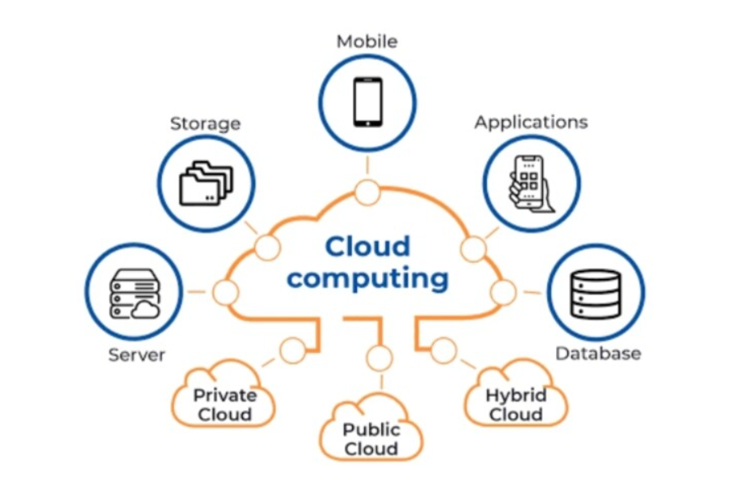

Веб та мобільна розробка
Категорія: Development
Проєктування та створення високопродуктивних додатків з унікальним UX/UI дизайном.
Замовити послугуКомплексні технологічні рішення для масштабування вашого бізнесу.
Категорія: Development
Проєктування та створення високопродуктивних додатків з унікальним UX/UI дизайном.
Замовити послугуКатегорія: Infrastructure
Налаштування серверів, автоматизація CI/CD процесів, забезпечення безпеки та міграція в хмару.
Замовити послугуМи створюємо програмне забезпечення, яке відповідає найвищим стандартам безпеки та продуктивності на ринку.
«Якість цифрового продукту визначається тим, наскільки непомітною є складна інженерна робота для кінцевого користувача.»

| Послуга / Етап | Стандарт | Business | Enterprise |
|---|---|---|---|
| Аналітика та аудит | Базовий | Поглиблений | Експертний |
| Терміни розробки | 4-6 тижнів | 2-3 місяці | Індивідуально |
| Підтримка DevOps | — | Включено | Пріоритетна 24/7 |